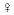

|
|
SQL functions exist to make your life easier when you need to manipulate data retrieved from a table. While SQL query, which is composed of the statements, is busy retrieving some data for you, the functions used within that query are validating, converting, calculating, getting the system information, and much more.
Think of the SQL functions as tools designed to accomplish a single well-defined task, for example, calculating square root or converting lowercase letters into uppercase. You invoke a function within SQL query by name (usually a single keyword). Some functions accept arguments and some do not, but what differentiates a function from every other executable module in RDBMS is that it always returns value.
While SQL itself is not a procedural language — that is, it lacks procedural features such as flow control structures and loops — using functions allows you, to a certain extent, to alleviate problems stemming from this deficiency.
All functions could be divided into two broad categories: deterministic functions and nondeterministic functions. Deterministic functions always return the same result if you pass into the same arguments; nondeterministic functions might return different results, even if they are called with exactly the same arguments. For example function ABS, which returns the absolute value of a number passed to it as an argument, is a deterministic function — no matter how many times you call it with, say argument, -5, it will always return 5 as a result. For example, the Microsoft SQL Server function GETDATE() — when it accepts no arguments and returns only the current date and time on the RDBMS server — is an example of a nondeterministic function: each time you call it a new date and time is returned, even if the difference is one second.
Some RDBMS restrict use of the nondeterministic function in database objects such as INDEX or VIEW. For example, the MS SQL Server disallows use of such functions for indexed computed columns and indexed views; the IBM DB2 UDB does not allow nondeterministic functions in the join condition expression, and you cannot use these function in Oracle's function-based index.
| Note |
Virtually every database vendor provides procedural extensions for use with their database products. Oracle has built-in PL/SQL, Microsoft uses its own dialect of Transact-SQL, and DB2 UDB uses IBM SQL (which is similar to Transact-SQL). Unlike SQL, these procedural extensions allow for creating full-fledged programs within their respective host environments. User-defined custom functions are usually created using one of their procedural languages. |
The list of SQL functions available for use within a particular RDBMS implementation grows with every new release, and some vendors are allowing users to define their own custom functions to perform nonstandard tasks. In this chapter we provide only a short list of the most helpful functions and their uses. Differences between vendor-specific implementations are highlighted.
| Note |
The portability problem with using functions in a query is the possibility that the query might not run properly with competitors' products. Some functions are identical in name and usage, some have only a different name, and some exist only within a particular RDBMS implementation. |
Not all of these functions (some would say most of them are not) are part of the SQL standard — be it SQL89 (SQL1), SQL92 (SQL2), or even SQL99 (SQL3). In fact, all of these standards specify only a handful of functions as a requirement for conformance to a specific level (entry, intermediate, or full). The old saying that you cannot program a standard still keeps true. The list of the functions specified in the SQL2 standard is given in Table 10-1.
|
SQL Function |
Description |
|---|---|
|
BIT_LENGTH (expression) |
Returns the length of the expression, usually string, in bits. |
|
CAST (value AS data type) |
Converts supplied value from one data type into another compatible data type. |
|
CHAR_LENGTH (expression) |
Returns the length of the expression, usually string, in characters. |
|
CONVERT (expression USING conversion) |
Returns string converted according to the rules specified in the conversion parameter. |
|
CURRENT_DATE |
Returns current date of the system. |
|
CURRENT_TIME (precision) |
Returns current time of the system, of the specified precision. |
|
CURRENT_TIMESTAMP (precision) |
Returns current time and the current date of the system, of the specified precision. |
|
EXTRACT (part FROM expression) |
Extracts specified named part of the expression. |
|
LOWER (expression) |
Converts character string from uppercase (or mixed case) into lowercase letters. |
|
OCTET_LENGTH (expression) |
Returns the length of the expression in bytes (each byte containing 8 bits). |
|
POSITION (char expression IN source) |
Returns position of the char expression in the source. |
|
SUBSTRING (string expression, start, length) |
Returns the string part of a string expression, from the start position up to specified length. |
|
TRANSLATE (string expression USING translation rule) |
Returns string translated into another string according to specified rules. |
|
TRIM(LEADING | TRAILING | BOTH char expression FROM string expression) |
Returns string from a string expression where leading, trailing, or both char expression characters are removed. |
|
UPPER (expression) |
Converts character string from lowercase (or mixed case) into uppercase letters. |
| Cross-References |
For obvious reasons, it would be very beneficial to have a clear picture of what functions are available in the most popular RDBMS as well as mapping of those functions between different implementations. In Appendix D, we've attempted to provide list of all functions, their respective mapping to each other, and brief explanations for the "big three" — Oracle 9i, IBM DB2 UDB 8.1, and Microsoft SQL Server 2000. |
Every vendor has its own classifications of the functions supported in its database product. IBM groups its DB2 UDB functions into column functions, scalar functions, row functions and table functions; whereas Oracle uses terms like single-row functions, aggregate functions, analytic functions, and object-reference functions; and Microsoft sports the most detailed classifications of configuration functions, cursor, date and time, mathematical functions, aggregate functions, metadata, security, string, system functions, and system statistical functions, as well as text and image functions, and rowset functions.
| Note |
IBM makes a distinction between SYSIBM and SYSFUN schema functions; they differ in the way they handle data; for example, sometimes one is handling numeric input while the other handling character input. Consider it an IBM implementation of function overloading where a different task is expected of a function based on the argument data types passed into the function. |
This chapter concentrates on the functions that could be used in any implementation context, leaving out many proprietary extensions. The XML-related functions are discussed in Chapter 17, security functions are in Chapter 12, and metadata functions are in Chapter 13.
All the examples, unless otherwise stated, use the ACME database. You could run them directly against this database installed in the RDBMS of your choice.
| Cross-References |
Refer to Appendix F on instructions for installing ACME database, and Appendix E for how to start a command line or visual interface for the RDBMS of your choice. |
We grouped some functions into numeric functions because they are operating with numbers — both input and output parameters are usually numeric: INTEGER, DECIMAL, and so on. The list of most common numeric functions is given in Table 10-2.
|
Oracle 9i |
IBM DB2 UDB 8.1 |
MS SQL Server 2000 |
Description |
|---|---|---|---|
|
ABS (n) |
ABSs (n) |
ABS (n) |
Returns absolute value of a number n. |
|
CEIL (n) |
CEIL[ING] (n) |
CEILING (n) |
Returns smallest integer that is greater than or equal to n. |
|
EXP (n) |
EXP (n) |
EXP (n) |
Returns exponential value of n. |
|
FLOOR (n) |
FLOOR (n) |
FLOOR (n) |
Returns the largest integer less than or equal to n. |
|
MOD.(n,m) |
MOD.(n,m) |
Operator % |
Returns remainder of n divided by m. |
|
POWER.(m,n) |
POWER.(m,n) |
POWER.(m,n) |
Returns value of m raised into nth power. |
|
N/A |
RAND.(n) |
RAND.(n) |
Returns a random number between 0 and 1. |
|
ROUND(n,[m]) |
ROUND (n,[m]) |
ROUND (n,m,[0]) |
Returns number n rounded to m decimal places. For MS SQL Server, the last argument — zero — is a default. |
|
SIGN(n) |
SIGN(n) |
SIGN(n) |
Returns -1, if n is a negative number, 1 if it is a positive number, and 0 if the number is zero. |
|
TRUNC (n,[m]) |
TRUNC[ATE] (n,[m]) |
ROUND (n,m,<>0) |
Returns n truncated to m decimal places. For MS SQL Server, when the last argument has a value other than zero, the result of the function is truncation. |
| Cross-References |
See Chapter 3 for more information on data types. |
By definition, function CEIL returns the least integer of the argument passed; that means that the function rounds the values up. The syntax and usage are identical for all three databases.
The argument could be a number or a column value; the output is shown underneath the query:
SELECT CEILING (prod_price_n) ceil_price, prod_price_n FROM product; ceil_price prod_price_n ------------ ------------ 19 18.24 34 33.28 27 26.82
The FLOOR function acts in a very similar fashion, rounding down. The syntax is identical across all three databases:
SELECT FLOOR (prod_price_n) floor_price, prod_price_n FROM product; floor_price prod_price_n ------------ ------------ 18 18.24 33 33.28 26 26.82
One might wonder how that is different from the TRUNC function. This function rounds a number to a specific length or precision, and works almost identically in all three RDBMS implementations.
In the following example, all the values of the PROD_PRICE_N column from the table PRODUCT are rounded to 1 decimal digit of precision:
SELECT ROUND(prod_price_n,1) round_price, prod_price_n FROM product; round_price prod_price_n ------------ ------------ 18.20 18.24 33.30 33.28 26.80 26.82
Since our query requested precision 2, the numbers were rounded up and down — depending on the number itself: 33.28 was rounded to 33.30, and 18.24 was rounded to 18.20.
| Note |
The Microsoft SQL Server's version of the ROUND function behaves somewhat differently than its equivalents in Oracle and DB2 UDB — it has a third optional argument (function) that by default is 0. When this argument is omitted or explicitly set to 0, the result is rounding — exactly as seen in the foregoing example; when the value is other than 0, the result will be truncated. |
The second integer argument could be negative to round numbers on the left of the decimal point, the integral part of the number:
SELECT ROUND (prod_price_n,1) round_price_right, ROUND (prod_price_n,-1) round_price_left, prod_price_n FROM product; round_price_right round_price_left prod_price_n ----------------- ---------------- ------------ 18.30 20.00 18.32 34.10 30.00 34.09 26.90 30.00 26.92 16.00 20.00 15.98
Here, specifying -1 as the second argument of the - function, we are getting the result of a rounded value for the digits on the left side of the decimal point.
Function TRUNC returns its argument truncated to the number of decimal places specified with the second argument. The example shown applies to Oracle and IBM DB2 UDB; the MS SQL Server uses the ROUND function to truncate:
SELECT TRUNC(prod_price_n, 1) trunc_price, prod_price_n FROM product; trunc_price product_price_n ------------ ------------ 18.2 18.24 33.2 33.28 26.8 26.82
There is a special case where function TRUNC is used to truncate dates in Oracle. It produces the midnight value for the date argument, that is, it truncates off all the hours, minutes, and seconds:
SELECT SYSDATE, TRUNC(SYSDATE) truncated FROM dual; SYSDATE TRUNCATED --------------------- ---------------------- 9/22/2003 10:53:36 AM 9/22/2003 00:00:00 AM
The RAND function is used to generate some random numbers at runtime. The syntax and usage are almost identical for DB2 UDB and the MS SQL Server 2000. (There is no analog function in Oracle, although it could be emulated through use of PL/SQL packages.) It accepts an optional seed argument (integer) and would produce a random float number in the range between 1 and 0 (inclusive).
The MS SQL Server 2000 syntax is:
SELECT RAND(1) random_number random_number --------------------- 0.71359199321292355
The DB2 UDB Syntax produces analogous results in somewhat different format:
SELECT RAND(5) FROM sysibm.sysdummy1 random_number --------------------- +1.64799951170385E-03
There are some nuances to RAND function usage: called several times within a session with the same seed value, it will produce exactly the same output. To get different pseudo-random numbers you need to specify different seed values, or use different sessions.
What do you do when random numbers of a range different from 0 to 1 are required? In this case you could multiply the output of the - function by the range factor, and then TRUNCATE or ROUND the result. Here is an example of producing a set of pseudo-random values in the range of 0 to 10000 in MS SQL Server 2000 syntax:
SELECT ROUND((RAND(15)* 10000),0) from_zero_to_10000 from_zero_to_10000 -------------------------- 7139.0
Encapsulating this functionality in a custom-made function would be the most rational solution. All three vendors provide the ability to create user-defined functions in their RDBMS software.
The SIGN function works exactly the same way in all three implementations. It is used to determine the sign of the numeric expression argument: if the number is positive, then the function returns 1; if the number is negative (the result will be -1, if the argument is zero), then 0 is returned. In our example all 1s were returned since the price is expressed in positive numbers:
SELECT SIGN (prod_price_n) sign_price, prod_price_n FROM product; sign_price prod_price_n ------------ ------------ 118.24 1 33.28 1 26.82
You could use just a literal number in place of the value from a table's column. Since all implementations use SELECT as the keyword to execute a function, you need something to select from.
| Note |
The DUAL table was introduced by Chuck Weiss of Oracle as an underlying object in the Oracle Data Dictionary. It was never meant to be seen by itself, but rather to be used in some complex JOIN operations (discussed in Chapter 9); it logically fits the SELECT notion as it implies that the FROM clause is to be used with each statement. |
String functions are grouped together because they perform some operations specifically pertaining to strings characters — that is, manipulation of the strings: changing the letter case, changing alignment, finding ASCII codes, and so on. Usually, but not always the output of such functions is a string. Some of the most common string functions are listed in Table 10-3.
|
ORACLE 9i |
IBM DB2 UDB 8.1 |
MS SQL Server 2000 |
Description |
|---|---|---|---|
|
ASCII (string) |
ASCII (string) |
ASCII (string) |
Returns ASCII code of the first character of a string. |
|
CHR (number) |
CHR (number) |
CHAR (number) NCHAR (number) |
Returns character for the ASCII code. |
|
CONCAT (string1, string2) |
CONCAT (string1, string2) |
operator '+' |
Returns result of concatenation of two strings. |
|
INSTR (string, substring, start position, occurrence) |
LOCATE (string1, string2,
n) |
CHARINDEX (string1,string2,
n) |
Returns position of an occurrence of a substring
within the string. |
|
SUBSTR (1,n) |
LEFT (string, n) |
LEFT (string, n) |
Returns n number of characters starting from the left. |
|
LENGTH (string) |
LENGTH (string) |
LEN (string) |
Returns number of characters in a string. |
|
LENGTHB (expression) |
LENGTH (expression) |
DATALENGTH (expression) |
Returns number of bytes in the expression, which could be any data type. |
|
LOWER (string) |
LOWER (string) |
LOWER (string) |
Converts all characters in a string to lowercase. |
|
LPAD (string1,n, string 2) |
REPEAT (char expression,
integer) |
REPLICATE (char expression,
integer) |
Returns string1 padded from the left with string2 n times. |
|
LTRIM (string, set) |
LTRIM (string) |
LTRIM (string) |
Returns string with leading blank characters removed. |
|
REPLACE (string1, string2, string3) |
REPLACE (string1, string2, string3) |
REPLACE (string1, string2, string3) |
Replaces all occurrences of string1 within string2 with string3. |
|
RPAD (string1,n, string2) |
SPACE (integer) |
SPACE (integer) |
Returns string1 padded from the left with string2 n times. |
|
LPAD/RPAD combination |
REPEAT (string, n) |
REPLICATE (string, n) |
Returns string consisting of the argument repeated n times. |
|
RTRIM (string, set) |
RTRIM (string) |
RTRIM (string) |
Returns string with trailing blank characters removed. |
|
TO_CHAR (expression) |
CHAR (expression) |
STR (expression) |
Converts argument expression into a character string. |
|
SUBSTR (string, n, m) |
SUBSTR (string, n, m) |
SUBSTRING (string, n, m) |
Returns a part of a string starting from nth character for the length of m characters. |
|
TRANSLATE (string1, string2, string3) |
TRANSLATE (string1, string2,
string3) |
STUFF (<char_ expression1>,<start>, <length>,<char_expression1>) |
Replaces all occurrences of string1 within string2 translated into string3. Functions STUFF and INSERT add/replace strings within strings. |
|
TRIM (string) |
LTRIM (RTRIM (string)) |
LTRIM (RTRIM (string)) |
Trims leading or trailing spaces off the string, or both. |
|
UPPER (string) |
UPPER (string) |
UPPER (string) |
Converts all characters |
| Cross-References |
Refer to Appendix G for a comprehensive list of vendor-specific functions. |
String functions are arguably the most widely used and the most confusing of the SQL functions. Here we are giving the examples of some we are using daily.
The CONCAT function simply concatenates two strings. This function could be replaced with an operator — + for SQL Server, and || for Oracle and DB2 UDB.
| Note |
You could use output of one function to be an input for another — this is not RDBMS- or even SQL-specific; it is a general programming concept. |
Here is a concatenation example in Oracle 9i syntax:
SELECT CONCAT( '$', TO_CHAR(prod_price_n)) display_price FROM product; display_price ------------------------------- $18.24 $33.28 $26.82
For DB2 UDB the syntax will be:
SELECT '$' || CHAR(prod_price_n) display_price FROM product; display_price ------------- $00000018.24 $00000033.28 $00000026.82
| Note |
That CHAR function converts numeric data into a fixed-length string, and the final result will be padded with zeroes from the left. The number of zeroes depends on the numeric data type converted. You could use additional formatting/conversion functions to produce results identical to these produced by Oracle or the MS SQL Server. |
Here is an equivalent MS SQL Server 2000 syntax:
SELECT '$' + CONVERT(varchar, prod_price_n) display_price FROM product;
SQL is a language specifically designed to handle information. As such it has a rich toolset for manipulating strings and characters. The three functions INSTR, LOCATE, and CHARINDEX are used to determine the position of a specific character (or combination of characters) within a string; based on this information, you can slice and dice text information in a number of ways.
For example, to locate the position of the end of the first word, use a blank space to separate the words in the description (assuming that every value in the column PROD_DESCRIPTION_S would have at least one blank space).
In MS SQL Server 2000 syntax, the blank space is indicated as ' '. You can use ASCII code 32 to specify blank space — CHAR (32). The following two statements are equivalent and produce identical results:
SELECT CHARINDEX(' ',
prod_description_s, 1) FROM product; SELECT CHARINDEX(CHAR(32),
prod_description_s, 1) char_position FROM product; char_position -------------
7 6 6 6 5 8 4 4 6 8 (10 row(s) affected)Oracle's INSTR function syntax is slightly different — Oracle allows you to specify occurrence of the string within a string — first, second, and so on. Most of the arguments are optional.
This query, executed in Oracle 9i SQL*Plus, looks for a second occurrence of the blank space within the string:
The following query executed in IBM DB2 UDB produces a result identical to that shown for MS SQL Server: it finds the first occurrence of a blank space in the string (both starting char and occurrence are optional arguments, if omitted defaults to 1):
SELECT LOCATE('
',PROD_DESCRIPTION_S) char_position FROM product;
To use IBM DB2 UDB function POSSTR you would need to change order of arguments:
SELECT POSSTR(PROD_DESCRIPTION_S,' ') char_position FROM product;
The results of the both queries will be identical, and match that produced for MS SQL Server.
| Note |
Optional arguments are the arguments that have some predefined default value that is assumed if the argument is missing from the list. Since the order of arguments is fixed, you must enter all the arguments prior to the one that you decided to specify; in the foregoing example, once you've specified occurrence value (fourth argument) you no longer can omit starting position (third argument). |
The SUBSTR (SUBSTRING on MS SQL Server) function returns part of an argument string, which is designated by starting position and required character length. Here is a query example using the function to return only the first three characters of the column prod_description_s value:
SELECT SUBSTR(prod_description_s,1,3) FROM product;
The third argument, specifying the required length, is optional for Oracle and DB2 UDB, and is mandatory for MS SQL Server's SUBSTRING function. If the third argument is omitted, the function would return all characters after the starting position in Oracle and DB2 UDB; for SQL Server to simulate this behavior, use an LEN / LENGTH function (see later in the chapter) to determine the total length of the string, or a number large enough to exceed any possible length of the string (no greater than 8000). For example, in the SQL Server this query would return all characters in the column prod_description_s, beginning from the second character:
SELECT SUBSTRING(prod_description_s, 2, LEN(prod_description_s)) FROM product;
Let's make our output slightly more complex. Say a user wants results to be mangled in a special way to produce an output that combines product number, product price, and product description in the format <first word of product description> <pound sign><product_number><pound sign><dollar sign>< product_price> for some company application. This could be done in a number of ways, one of which is the following query below (in MS SQL Server syntax):
SELECT LEFT(prod_description_s, CHARINDEX(CHAR(32), prod_description_s, 1)-1) + '#'+ prod_num_s + '#' + '$' + CONVERT(VARCHAR,prod_price_n) display FROM product; display ------------------------- SPRUCE#990#$18.24 STEEL#1880#$33.28 STOOL#2871#$26.82 STOOL#3045#$15.92 HAND#4000#$11.80
In Oracle this result can be produced with this query:
SELECT SUBSTR(prod_description_s,1 INSTR(CHAR(32), prod_description_s, 1,1)-1) || '#' || prod_num_s || '#' || '$' || TO_CHAR(prod_price_n)display FROM product; display ------------------------- SPRUCE#990#$18.24 STEEL#1880#$33.28 STOOL#2871#$26.82 STOOL#3045#$15.92 HAND#4000#$11.80
IBM DB2 UDB uses the POSSTR (or LOCATE) function in place of Oracle's INSTR function, and function CHR to produce a blank character from ASCII code 32 and converts number to string with the CHAR function (instead of Oracle's TO_CHAR):
SELECT SUBSTR(prod_description_s,1 POSSTR(prod_description_s, CHR(32))-1) || '#' || prod_num_s || '#' || '$' || CHAR(prod_price_n) display FROM product; display ------------------------------------- SPRUCE#990#$18.24 STEEL#1880#$33.28 STOOL#2871#$26.82 STOOL#3045#$15.92 HAND#4000#$11.80
While this query might look a bit scary, there is nothing mysterious about it. The CHARINDEX / INSTR / POSSTR functions find the position of blank space — CHAR(32) — and subtract 1 from that number so a blank space is not included in the final result. We use the position value as input for the function LEFT, specifying from which position it should return the characters (column PROD_ DESCRIPTION_S) to the left (Oracle and DB2 UDB use the SUBSTR function; MS SQL Server uses SUBSTRING — which, in a sense, is a more generic version of its own LEFT/RIGHT functions); the rest is a simple concatenation of characters, discussed previously.
| Note |
You may have noticed that we did not use the available function LEFT in DB2 UDB; this is because this function works differently from the similarly named function in the MS SQL Server. In the IBM DB2 UDB database, function LEFT returns a string consisting of the leftmost expression2 bytes in expression1. Also, function LOCATE has a third optional argument with which to specify what character the search should start from. (POSSTR always starts at the first character.) |
The function LENGTH (LEN for MS SQL Server) returns a number of characters (not a number of bytes! — see Chapter 3 for more details) in the argument. If an argument is not of a character type, it will be implicitly converted into string, and its length will be returned. Oracle also provides a number of variations of the function:
To return a number of bytes in the expression, use LENGTHB and DATALENGTH for Oracle and SQL Server, respectively. IBM and Oracle also overload their LENGTH functions — the same function could return length in characters or bytes, depending upon the data type of the argument. These functions do not convert argument into string, but rather give the internal storage size for the data type as it is defined in the RDBMS. For example, the query
SELECT LENGTHB(SYSDATE) FROM dual;
returns 9 for Oracle (internal storage for current system date). The MS SQL Server equivalent expression
SELECT DATALENGTH(GETDATE())
reports that 8 bytes are used to store system date. IBM UDB2, for example, uses 4 bytes for date storage and 10 bytes for timestamp:
SELECT LENGTH(CURRENT DATE) date_length, LENGTH(CURENT TIMESTAMP) timestamp_length FROM sysibm.sysdummy1 date_length timestamp_length ------------ ----------------- 4 10
| Cross-References |
For more information on data types and their internal storage, see Chapter 3. |
The functions LOWER and UPPER are the rare examples of functions mandated by the SQL92/99 standard and implemented across all three RDBMS without modifications. These functions are simple and intuitive to use. They convert string expressions into lowercase or uppercase, respectively:
SELECT UPPER(prod_description_s) upper_case, LOWER(prod_description_s) lower_case FROM product; upper_case lower_case ------------------------ ----------------------- SPRUCE LUMBER 30X40X50 spruce lumber 30x40x50 STEEL NAILS 6'' steel nails 6'' STOOL CAPS 5'' stool caps 5''
IBM DB2 UDB also contains additional versions of the functions LCASE and UCASE, most probably due to being in business for a long time — you certainly accumulate some baggage after being on the market for over 30 years.
These functions fall into the broader range of Conversion Functions, which are discussed later in this chapter. They are used to convert one data type into character data type, for example, a number into a string or date/time data into a string (this might be needed to produce a report that accepts character data only). In addition, these functions allow you to format output when used to convert, for instance, date and time data types.
The usage examples are shown in the CONCAT function above. Since this function accepts only strings, it is necessary to convert all the numbers into strings to avoid an error in IBM DB2 UDB; Oracle 9i implicitly converts all concatenated values into strings.
Microsoft function STR differs from Oracle's TO_CHAR and IBM's CHAR in that it accepts only numeric input — no date/time or even string. It has optional arguments that specify total length of the result (including decimal point) as well as number decimal places. For example, the following query converts a float number 123.35 (two decimal places) into a string (MS SQL Server 2000 syntax):
SELECT STR(123.35) result result ---------- 123
Since both optional arguments — total length (default 10) and precision (default 0) — were omitted, the result is truncation. The following query takes into account that the expected result should be 7 characters long and have 3 decimal places (specifying 2 decimal places — less than is present — would result in rounding the final output):
SELECT STR(123.235,7,3) result result ------- 123.235
The REPLACE function found in IBM DB2 UDB, Oracle, and MS SQL Server returns a string (CHAR data type); every occurrence of an expression2 is replaced with expression3, for example:
SELECT
REPLACE('aabbaabbaa','aa','bb') FROM dual; result ------------
bbbbbbbbbbThis query returns a 'bbbbbbbbbb' string since every occurrence of 'aa' is replaced with 'bb'. To run this query against SQL Server, just remove the FROM clause.
To replicate a character or sequence of characters you may use the REPLICATE and REPEAT functions. These functions pertain to IBM DB2 UDB and the Microsoft SQL Server; in Oracle similar functionality is achieved with a combination of functions LPAD/RPAD. It is a fairly intuitive to use this function because the DB2 UDB syntax produces a string where a word repeat is replicated three times (note the absence of a blank space separator between the words):
SELECT REPEAT('repeat',3)
example FROM SYSIBM.SYSDUMMY1 example ------------------------------
repeatrepeatrepeatThere is a limit to the total length of the resulting string imposed by the argument's data type — the maximum number of replications must not exceed the upper range of integer values for the system (for 32-bit machines, up to 2,147,483,647). The results from MS SQL Server would be identical with the following syntax:
Here is an example of using the RPAD function to replicate a string:
SELECT
RPAD('repeat',LENGTH('repeat')*3,'repeat') example FROM dual; example
------------------------------ repeatpepeatrepeatThe second argument of the function specifies the total length of the resulting string, and the function LENGTH is used to generically determine the length of the initial string. Multiplying it by three specifies that the string is to be repeated three times.
This is a smart version of the REPLACE function. It uses pattern matching to find and replace characters within a string; the following query replaces all numbers (from 0 through 9) with 0, and all letters — except K — with an asterisk (*); the letter K is replaced with X:
SELECT
TRANSLATE('2KRW229', '0123456789ABCDEFGHIJKLMNOPQRSTUVWXYZ',
'0000000000**********X***************') translate_example FROM DUAL;
translate_example ------------------------------ 0X**000This function is useful for security purposes: inside the SQL code you can use the exact values (say, credit card numbers), but the produced output is obfuscated. Here is a credit card example, which replaces all numbers with asterisks:
SELECT TRANSLATE('4526 43567
6091 1506', '0123456789', '**********') visa_card_number FROM dual;
visa_card_number ------------------------ **** ***** **** ****
The usage is identical in Oracle and DB2 UDB, while the SQL Server does not have a built-in function to do this; its function STUFF removes a specified number of characters at a specific point, and stuffs in another specified string of characters. The first argument is the string itself, the second specifies at what character to start, the third argument tells the function how many characters to remove (0 or greater), and the fourth — the last — argument specifies what characters to insert at this point. In this example an insertion of the bbb string is made at the third character in the argument string, replacing this character in the process:
SELECT STUFF('aaaaaaaaa', 3,
1, 'bbb') result result ----------- aabbbaaaaaa
One could use the STUFF function (in conjunction with some other SQL functions) to duplicate Oracle and DB2 UDB functionality by creating customized, user-defined functions. (The creation of user-defined functions, which are mentioned at the end of this chapter, is beyond scope of this book.)
Although it might not be apparent, blank spaces could be a major concern. Usually, blank spaces are not shown in the user interface when typing in some character value, and that could easily cause mistakes. RDBMS requires absolute precision — the string 'user' and the string 'user ' (with a trailing blank space) are never the same.
These functions act similarly in all three RDBMS: they remove leading and/or trailing characters from a string expression. The main difference is that Oracle 9i supports more of the SQL standard syntax (TRIM in addition to LTRIM and RTRIM), and allows for trimming characters other than blank spaces; while IBM DB2 UDB and the Microsoft SQL Server use this function for blank spaces only.
Consider the following example, which works in IBM UDB2:
SELECT LENGTH(LTRIM('
three_blanks')) ltrimmed, LENGTH(' three_blanks') with_leading_blanks FROM
sysibm.sysdummy1 ltrimmed with_leading_blanks ----------- -------------------
12 15
A similar script in the MS SQL Server produces identical results:
SELECT LEN(LTRIM('
three_blanks')) ltrimmed, LEN(' three_blanks')
with_leading_blanks
To achieve the same results in Oracle 9i, use either the LTRIM function or the TRIM function. The LTRIM example looks almost identical to IBM DB2 UDB (just replace sysibm.sysdummy1 with dual), and therefore is omitted:
SELECT LENGTH(TRIM(LEADING
FROM ' three_blanks')) ltrimmed, LENGTH(' three_blanks') with_leading_blanks
FROM dual; ltrimmed with_leading_blanks ----------- ------------------- 12
@code last w/ rule Char:15Note that blank spaces are default for the TRIM function. To use this function to trim characters other than blank spaces from a string expression, the following syntax could be used. For example, to remove the letter M from both the beginning (leading) and end (trailing) of the string value M&M or IBM:
SELECT TRIM(BOTH 'M' FROM 'M&M or IBM') trimmed FROM dual; trimmed ----------- &M or IB
The argument specifying what letter is to be removed is always case-sensitive.
The functions grouped in Table 10-4 deal with date and time; they accept a wide range of parameter data types and produce output strings (characters), date/times, and numbers.
|
ORACLE 9i |
IBM DB2 UDB 8.1 |
MS SQL Server 2000 |
Description |
|---|---|---|---|
|
ADD_MONTHS (date, n) |
DATE + n MONTHS TIME + n |
DATEADD (month, number, date) |
Returns date plus n months (Oracle); returns date plus date partyear, month, day(MS SQL Server). |
|
CURRENT_DATE CURRENT_ TIMESTAMP(precision) |
CURRENT DATE |
GETDATE** |
Returns current date in session's time zone. |
|
TO_DATE (value, format, nls_param) |
DATE (value) |
CONVERT** |
Returns date from the value according to specific format, national language(Oracle) (**). |
|
EXTRACT (day) |
DAY |
DAY |
Returns DAY part (integer) of the specified datetime expression. |
|
TO_CHAR (date, 'day'/month) |
DAYNAME |
DATENAME (date part, datetime) |
Returns a name of the requested date part: day or month. |
|
EXTRACT (datetime) |
MONTH, DAY, HOUR etc |
DATEPART (date part, datetime) |
Returns requested date part (day, month, year). |
|
MONTH_BETWEEN |
Date arithmetic |
DATEDIFF |
Calculates difference between two dates. |
|
NEW_TIME |
CURRENT TIMEZONE |
GETUTCDATE |
Returns datetime relative to current datetime on the server. |
|
NEXT_DAY |
Date arithmetic |
DATEADD (day, n, m) |
Calculates what day would be next relative to some other supplied date. |
|
SYSDATE |
CURRENT DATE |
GETDATE |
Returns current datetime on the RDBMS server. |
|
EXTRACT (year) |
YEAR |
YEAR |
Returns YEAR part of the specified datetime expression. |
Keeping a time track of the changes in the database requires access to the system's date and time settings. Oracle implemented SYSDATE pseudo column (which can be considered a function for our purposes) that returns the system's current date and time, the Microsoft SQL Server has function GETDATE (), and IBM DB2 UDB uses a CURRENT DATE clause in the SELECT part of the query. These functions are listed in Table 10-5.
|
ORACLE |
IBM DB2 UDB |
SQL Server 2000 |
|---|---|---|
|
SELECT SYSDATE |
SELECT CURRENT DATE |
SELECT GETDATE() |
|
[FROM DUAL]; |
[FROM SYSIBM.SYSDUMMY1] |
2003-09-05 13:54:18.873 |
|
---------------- |
----------------- |
--------------- |
|
05-SEP-03 9:47:01 PM |
9/5/2003 |
2003-09-05 13:54:18.873 |
The date output can be formatted using various vendor-specific masks, arguments, or conversion functions. Refer to the RDBMS manual for more information.
These functions deal with the Earth's different time zones. The "standard" functions always return the time zone in which the machine is located, and sometimes — especially when telecommuting to a central location from a different time zone — it is not what is needed.
The MS SQL server function GETUTCDATE returns current UTC time (Universal Time Coordinate or Greenwich Mean Time). Consider the following query, which returns results from both the GETDATE and GETUTCDATE functions:
SELECT GETUTCDATE() utc_time, GETDATE() local_time utc_time local_time --------------------------- ----------------------------- 2003-09-06 00:06:14.660 2003-09-05 19:04:14.660
Oracle's approximate equivalents to this function are TZ_OFFSET and SYS_EXTRACT_UTC, while NEW_TIME returns the time that would be in zone 2 when the date/time in zone 1 is the specified value.
For example, to find out the date and time in New York, NY, when it is September 5, 2002, 7:23:45 p.m. in Seattle, WA, using Oracle RDBMS software, you would run the following query (to force Oracle SQL*Plus to show date/time in the extended format, use ALTER SESSION statement explained later in this chapter):
SELECT
NEW_TIME(TO_DATE('09-05-2003 7:23:45 AM', 'MM-DD-YY HH:MI:SS PM' 'PST', 'EST')
eastern_time FROM dual; eastern_time --------------------------- 05-SEP-2003
10:23:45 PMThe function NEW_TIME takes only arguments specified in Table 10-6. The function FROM_TZ could use many more time zones values.
|
Time Zone |
Description |
|---|---|
|
AST (ADT) |
Atlantic Standard (or Daylight Time) |
|
BST (BDT) |
Bering Standard (or Daylight Time) |
|
CST (CDT) |
Central Standard (or Daylight Time) |
|
EST (EDT) |
Eastern Standard (or Daylight Time) |
|
GMT |
Greenwich Mean Time |
|
HST (HDT) |
Alaska-Hawaii Standard Time or Daylight Time |
|
MST (MDT) |
Mountain Standard or Daylight Time |
|
NST |
Newfoundland Standard Time |
|
PST (PDT) |
Pacific Standard or Daylight Time |
|
YST (YDT) |
Yukon Standard or Daylight Time |
In DB2 UDB you can use CURRENT TIMEZONE to find out the difference between UTC and your current time zone. In our example it shows 7 hours difference between Pacific Time Zone and UTC (Coordinated Universal Time):
SELECT HOUR(CURRENT TIMEZONE) utc_difference FROM sysibm.sysdummy1 utc_difference -------------- -7
Oracle's function CURRENT_DATE returns the current date of the session, not the server.
| Note |
UTC is an abbreviation corresponding to Coordinated Universal Time, formerly known as Greenwich Mean Time (GMT). The GMT is based on the time at the zero meridian that crosses Greenwich, England; it became the de-facto standard in the nineteenth century, largely because of the successes of British Navy and English traders. UTC is essentially GMT, only "politically corrected." It uses 24-hour time notation. |
The following examples demonstrate this. First, to instruct Oracle to return the extended date/time value format for your SQL*Plus session:
SQL> ALTER SESSION SET NLS_DATE_FORMAT='DD-MON-YYYY HH24:MI:SS' Session altered.
To use the function SYSDATE to get the current system date:
SELECT SYSDATE server_date, CURRENT_DATE session_date FROM dual; server_datesession_date -------------------- -------------------- 30-SEP-2003 19:05:35 30-SEP-2003 19:05:35
As you can see, the session time and the system time are identical. To change the session time, say, for Portugal's time zone ('WET'), eight hours ahead, code:
SQL> ALTER SESSION SET TIME_ZONE ='WET'; Session altered.
| Tip |
You could specify the time in HH:MI format or supply some predefined TIME_ZONE value set for the system. To find out the list of valid values for this parameter, query Oracle's dynamic performance view V$TIMEZONE_NAMES. |
And now our session time is eight hours ahead of our system time:
SELECT SYSDATE server_date, CURRENT_DATE session_date FROM dual; server_datesession_date -------------------- -------------------- 30-SEP-2002 19:05:39 01-OCT-2002 03:05:39
These examples by far do not exhaust the topic of time zone functions. Refer to the specific RDBMS manuals to learn more.
The MS SQL Server DATEADD function returns a new datetime value calculated by adding a specified date part on top of the date argument. It is not as straightforward as it may seem.
The following example query returns the date that is exactly five months from date '2002-09-05' (refer to Chapter 3 for more information on this datetime type and its use of literals):
SELECT DATEADD(month,5,'2003-09-05') months months --------------------------- 2003-02-05 00:00:00.000
The DATEADD function can also add days, hours, and minutes to a date; Oracle and DB2 UDB use date arithmetic to accomplish this task.
The same results can be produced in Oracle with the following query:
SELECT
ADD_MONTHS(TO_DATE('2003-09-05','YYYY-MM-DD'),5) months FROM dual; months
--------------------------- 05-FEB-2004Oracle is much less flexible in accepting literals as dates — hence the need for explicit conversion of the literal '2003-09-05' into date type. (See Chapter 3 for literals usage; conversion functions are discussed later in the chapter.) Also, the default output format depends on the machine settings and could be overridden by an application — that is, forward slashes can be replaced with dashes, the year can be put in front followed by month and date.
To add, say, 20 days to a current date, use the following query in Oracle:
SELECT SYSDATE + 20 FROM DUAL;
| Cross-References |
Oracle 9i introduced the INTERVAL data type, which could be used in date/time arithmetic, effectively obliterating the ADD_MONTH function. Refer to Chapter 3 for more information on using interval literals. |
IBM DB2 UDB does not have a special function for date and time arithmetic. To add five months to a date you can use the following query:
The same syntax serves for adding days, hours, and so on:
SELECT (CURRENT DATE + 5 DAYS)add_days FROM sysibm.sysdummy1 add_days ---------- 09/10/2002
You may substitute the date value with that from the table in a query, or use a literal.
Oracle's EXTRACT function returns the value of a specified part of a date/time expression. The acceptable parts are YEAR, MONTH, DAY, HOUR, MINUTE, and SECOND. It also allows you to specify TIMEZONE_HOUR, TIMEZONE_MINUTE, TIMEZONE_REGION, and TIMEZONE_ABBR (for 'abbreviation'); these are added to accommodate time zone differences. This sample query extracts the YEAR part from the current date:
SELECT EXTRACT(YEAR FROM SYSDATE) year_part FROM DUAL; year_part -------------- 2002
The date/time expression must be in correct format; for example, asking for a MINUTE portion of the expression would be meaningless (defaults to 00) if that expression does not have minutes in it.
The Microsoft SQL Server uses the DATEPART function to extract parts of the date/time expression. In addition to the standard arguments like YEAR, MONTH, DAY, HOUR, MINUTE, and SECOND, it also returns milliseconds — if required:
SELECT DATEPART( month, '09-08-2002') month_part month_part -------------- 9
DB2 UDB and the SQL Server have special functions to return the name of the part of the date. Here is an example of such a function in IBM DB2 UDB:
SELECT DAYNAME(CURRENT DATE) day_name FROM sysibm.sysdummy1 day_name -------------- Saturday
The function MONTHNAME would have returned 'September'.
The MS SQL Server has a DATENAME function that encompasses functionality of both DAYNAME and MONTHNAME functions of IBM. The following query returns the name of the month:
SELECT DATENAME(MONTH, GETDATE()) month_name month_name ---------------- September
And this function returns the name of the day of the week:
SELECT DATENAME(WEEKDAY, GETDATE()) day_name day_name ---------------- Thursday
As said before, Oracle does not have any specific functions to accomplish these tasks, but you can use the conversion function with applied format. This function is similar to the DATENAME function of the SQL Server.
This query returns day name of the today's date:
SELECT TO_CHAR(SYSDATE,'DAY') day_name_upper, TO_CHAR(SYSDATE,'Day') day_name_mixed FROM dual; day_name_upper day_name_mixed ---------------- ------------------ THURSDAY Thursday
And this query returns month name of the current date:
SELECT TO_CHAR(SYSDATE,'MONTH') day_name_upper, TO_CHAR(SYSDATE,'month') day_name_lower FROM dual; day_name_upperday_name_lower ---------------------------------- SEPTEMBER september
Note that using a different letter case to specify the date part name in Oracle 9i results in different output formatting. This does not apply to either the MS SQL Server, or IBM DB2 UDB v8.1.
The Oracle function MONTHS_BETWEEN returns the number of the months between two dates: if the first date is later than the second, the result is a positive number; if the first date is earlier than the second, the returned number will be negative. When compared dates have the same day portion, the result is always an integer; otherwise, Oracle returns a fractional value based on 31-day month and takes into consideration time portion of the dates:
SELECT MONTHS_BETWEEN
(TO_DATE('09-05-2002','MM-DD-YYYY'), TO_DATE('11-05-2002','MM-DD-YYYY'))
months_in_between FROM dual; months_in_between ----------------- -2
The DATEDIFF function in the MS SQL Server returns a specified date part (or all of them) between the two dates. It obeys the same rules as Oracle's function, but is different in that its return value could represent days, months, minutes, and so on:
SELECT datediff(month, '09-05-2002','11-05-2002') months_in_between months_in_between ----------------- 2
For DB2 UDB, use date arithmetic:
SELECT (MONTH('09-05-2002')
– MONTH('11-05-2002')) months_in_between FROM sysibm.sysdummy1
months_in_between ----------------- 2In exacltly the same way you can calculate, for example, the number of days, hours, minutes, or seconds, using DAY, HOUR, MINUTE, or SECOND functions, respectively.
While aggregate functions (listed in Table 10-7) logically belong with the SELECT statement discussed in Chapter 8 and are thoroughly covered there, it is appropriate to include a brief description in this chapter for reference.
|
ORACLE 9i |
IBM DB2 UDB |
MS SQL Server 2000 |
Description |
|---|---|---|---|
|
AVG (number) |
AVG (number) |
AVG (number) |
Calculates average for a range of numeric values. |
|
COUNT (number) |
COUNT (integer) |
COUNT (integer) |
Returns number of rows in a SELECT statement. |
|
MAX (number) |
MAX (number) |
MAX (number) |
Returns max value among selected values. |
|
MIN (number) |
MIN (number) |
MIN (number) |
Returns min value among selected values. |
|
SUM (number) |
SUM (number) |
SUM (number) |
Calculates sum of the selected values. |
Aggregate functions return a single value based on a specific calculation within a set (group) of values; usually they are tied to the GROUP BY clause of the SELECT statement, though it is not a requirement for some of them. When used with a GROUP BY clause, each aggregate function produces a single value for each group, not to the whole table.
The SUM function sums up all the values in the specified column. If you, for example, needed to know the total amount of all your sales, this query would bring the answer:
SELECT SUM(total_price) total_sale FROM v_customer_totals; total_sale --------------- 457000.40
For the total of all your sales grouped by customer, use the query:
SELECT customer_name, SUM(total_price) total_sale FROM v_customer_totals GROUP BY customer_name; customer_name total_sale --------------------------- ---------- WILE BESS COMPANY 276775.60 WILE ELECTROMATIC INC. 30956.20 WILE ELECTROMUSICAL INC. 19824.00 WILE ELECTRONICS INC. 28672.80 WILE SEAL CORP. 100771.80
This query summed up the values contained in the total_price column for each customer separately and produced total sales for each customer in the total_sale column.
This function can be used with ALL or DISTINCT predicates. The concept behind these is quite simple: ALL counts each and every value found in the column, while DISTINCT counts identical values only once (i.e., if there are several sales in the amount of $6608.00, only one of the sales is counted). Consider the following query comparing outcome of the SUM functions with and without the DISTINCT predicate:
SELECT SUM(DISTINCT total_price)distinct_price, SUM(ALL total_price) total_sale FROM v_customer_totals; distinct_price total_sale ----------------- -------------------- 165405.80 457000.40
Comparing results of this query with previous examples, you can see that the ALL predicate is specified by default. The syntax for the SUM function is identical for all three RDBMS.
You could specify the WHERE clause to further restrict the values, for example, to find total sales for the last quarter.
| Cross-References |
Refer to Chapter 8 for more detailed discussion of the aggregate functions uses, including examples. |
This function returns the total number of records in the table/view. To find how many orders were placed by customers in the ACME database, all you have to do is query the V_CUSTOMER_TOTALS view:
SELECT COUNT(order_number) total_orders FROM v_customer_totals; total_orders ------------ 51
The same result could be achieved by issuing another COUNT query:
SELECT COUNT(*) total_orders FROM v_customer_totals; total_orders ------------ 51
The results are dependent on whether the ALL (default) or DISTINCT predicates are applied. ORDER_NUMBER is unique within the view; that's why counting order numbers produces results identical to counting the total number of records in the view. However, if we count customers who placed these orders in the CUSTOMER_NAME column, the results will be different. Here is the query that uses COUNT in the CUSTOMER_NAME column twice — once with the DISTINCT predicate and one with the ALL predicate (default):
SELECT COUNT(DISTINCT customer_name)total_customers, COUNT(ALL customer_name) all_records FROM v_customer_totals; total_customers all_records --------------- ----------- 5 51 (1 row(s) affected)
To find out how many orders each customer placed, use the GROUP BY clause. The following query accomplishes this task:
SELECT customer_name, COUNT(order_number) total_orders FROM v_customer_totals GROUP BY customer_name; customer_name total_orders ---------------------------- ---------- WILE BESS COMPANY 31 WILE ELECTROMATIC INC. 4 WILE ELECTROMUSICAL INC. 3 WILE ELECTRONICS INC. 3 WILE SEAL CORP. 10
You could use SQL predicates DISTINCT and ALL with the COUNT function, ALL being the default. In the foregoing example, orders are grouped by CUSTOMER_NAME to get the total orders for a customer; imagine that you are asked, "How many customers do you have?" Obviously, using the COUNT function in the CUSTOMER_NAME column would not produce the desired results because it counts each of the multiple entries of the same company; you need to use the DISTINCT predicate here:
SELECT COUNT(customer_name) all_records, COUNT(DISTINCT customer_name) distinct_records FROM v_customer_totals all_records distinct_records ----------- ---------------- 51 5
As you can see, only five different customers placed the 51 orders recorded in the view.
You also should know about the use of NULL in aggregate functions. NULL values are not included for calculations; if all values are NULL, that is what will be returned, not 0. Consider the following query, which returns counts for the column PHONE_SALESMANID_FN:
SELECT COUNT(phone_salesmanid_fn) count_for_nulls, COUNT (*)count_all FROM phone; count_for_nulls count_all ---------------- ----------- 12 @SB code last:86
Notice that all the NULLs are simply ignored when they are used for calculating averages, sums, and so on. Should you specifically request records "WHERE phone_salesmanid_fn IS NULL" an exact 74 records would be returned, which together with 12 not NULL values make up the total 86.
This function produces average value of a group of numeric values. For example, if you would like to know the average value of the orders you have in the V_CUSTOMER_TOTALS view, you would issue the following statement:
SELECT AVG(total_price) average_price FROM v_customer_totals; average_price ---------------- 8960.792156
What this function did was sum up the total_price value for every record in the view and then divide it by the number of records. You can produce the same result by using a combination of the SUM and COUNT functions:
SELECT SUM(total_price)/COUNT(order_number) average_price, FROM v_customer_totals; average_price ------------------- 8960.792156
To get the average order placed per customer, use the GROUP BY clause:
SELECT customer_name, AVG(total_price) average_order FROM v_customer_totals GROUP BY customer_name; customer_name average_order ------------------------- ------------- WILE BESS COMPANY 8928.245161 WILE ELECTROMATIC INC. 7739.050000 WILE ELECTROMUSICAL INC. 6608.000000 WILE ELECTRONICS INC. 9557.600000 WILE SEAL CORP. 10077.180000
These functions select minimum and maximum values from the list of values in the column. The following example finds the biggest and the smallest orders ever placed, looking at all customers:
SELECT MAX(total_price) max_order, MIN(total_price) min_order FROM v_customer_totals; max_order min_order --------------- ------------- 15456.80 6608.00
To find out the minimum and maximum orders placed by a particular customer, use the GROUP BY clause in your query:
SELECT customer_name, MAX(total_price) max_order, MIN(total_price) min_order FROM v_customer_totals GROUP BY customer_name; customer_name max_order min_order -------------------------- --------- ----------- WILE BESS COMPANY 15402.20 6608.00 WILE ELECTROMATIC INC. 9038.00 6608.00 WILE ELECTROMUSICAL INC. 6608.00 6608.00 WILE ELECTRONICS INC. 15456.80 6608.00 WILE SEAL CORP. 15456.80 6608.00
You can also use SQL predicates DISCTINCT and ALL with the MIN and MAX functions.
| Note |
Oracle 9i also uses aggregate functions with the analytic clause OVER. There is no direct equivalent to this functionality in MS SQL Server 2000 and IBM DB2 UDB. |
| Cross-References |
There are more aggregate functions implemented by the vendors in their products. For a comprehensive list of the vendor-specific implementations, refer to Appendix G. |
Sometimes it is necessary to convert one data type into another. In the examples with CONCAT function, we had to convert numbers into string before being able to concatenate then with other string values. As it becoming clearer that English is not the only language on Earth, there is ever-increasing demand for national characters databases: conversion functions provide translation for data so it could be correctly represented in the character set of the native alphabets. Some of the most common conversion functions are listed in Table 10-8.
|
ORACLE 9i |
IBM DB2 UDB 8.1 |
MS SQL Server 2000 |
Description |
|---|---|---|---|
|
CAST (data type AS data type) |
CAST (data type AS data type) |
CAST (data type AS data type) CONVERT (into data type, value, format) |
Converts one data type into another, compatible data type. |
|
CONVERT |
N/A |
N/A |
Converts character data from one character set into another character set. |
|
TO_CHAR (expression) |
CHAR (expression) |
CAST (expression as VARCHAR/CHAR (N)) |
Converts an expression of a compatible data type into a string of characters. |
|
TO_DATE (expression) |
DATE (expression) |
CAST (expression as DATETIME) |
Converts an expression of a compatible data type/format into DATE/DATETIME data type. |
| Note |
Sometimes RDBMS converts data implicitly from one type to another; while this feature might be convenient, it is also something to worry about. One example is the loss of precision when inserting the FLOAT data type intro a column that was declared as INTEGER — the number would lose all decimal numbers because it would be truncated when converted implicitly into INTEGER. |
There are two general functions that perform this type of conversion: CAST and CONVERT. These functions convert one data type into another. The function CAST is used almost identically across all three RDBMS. CONVERT, however, is used for conversion from one character set to another Oracle 9i (discussed later in this chapter), and in the Microsoft SQL Server it is almost a synonym for the function CAST.
The CAST function syntax is as follows:
CAST (<from datatype> AS <into datatype>)
There are slight differences in the CAST function's capabilities among the three implementations: the IBM DB2 UDB and the SQL Server can cast any built-in data type into another built-in data type, while Oracle allows collection-based data types (like VARRAY) to be used as valid arguments for this function.
In comparison, the SQL Server's CONVERT function's syntax is more convoluted; it can deal not only with data type but also with how the output is formatted. The parameters length and style are optional: length is used for data types that could have length — like VARCHAR, CHAR, NCHAR, VARBINARY — and style is used to convert datetime and smalldatetime into text. (It defines how the resulting string is formatted, e.g., with century or without, with milliseconds or not.) The data type must be system-defined data types; user-defined data types are not permissible:
CONVERT ( <data_type> [(length)] , <expression> [,style ])
For example, the ACME database view V_CUSTOMER_TOTAL has a column TOTAL_PRICE with a numeric data type; in order to display this data with a preceding dollar sign ($), you must convert a number into a character data type first. (Oracle would perform an implicit conversion in this case, while DB2 UDB and the MS SQL Server would both generate an error.)
Oracle implicitly converts the numeric data types into character string data types when concatenating numbers (values in the TOTAL_PRICE column) and strings ($) as follows:
SELECT
customer_name, ('$' || total_price) price FROM v_customer_totals customer_name
price --------------------------- ---------- WILE BESS COMPANY $7511.00 WILE
BESS COMPANY $8390.00 WILE ELECTROMUSICAL INC. $6608.00Here is the SQL Server syntax for the query (the MS SQL Server also could use the CONVERT function to achieve the same result):
SELECT customer_name, '$' + CAST(TOTAL_PRICE as VARCHAR(10)) price FROM v_customer_totals customer_name price --------------------------- ---------- WILE BESS COMPANY $7511.00 WILE BESS COMPANY $8390.00 WILE ELECTROMUSICAL INC. $6608.00
A similar result in DB2 UDB is produced with the following query:
SELECT
customer_name, CONCAT('$', CAST(total_price as CHAR(32)) price FROM
v_customer_totals customer_name price --------------------------- ----------
WILE BESS COMPANY $7511.00 WILE BESS COMPANY $8390.00 WILE ELECTROMUSICAL INC.
$6608.00DB2 UDB insists on including leading zeroes in the final result, which for the DECIMAL data type is 32 characters long (since the precision is 32 for the TOTAL_PRICE column data type); the result is $00000000000000000000000007511.00. To reduce the number of leading zeroes, the first step is to cast TOTAL_CAST value to a DECIMAL with a different precision:
SELECT
customer_name, CONCAT('$', CAST(CAST(total_price as DECIMAL(7,2)) AS CHAR(12))
price FROM v_customer_totals customer_name price ---------------------------
---------- WILE BESS COMPANY $07511.00 WILE BESS COMPANY $08390.00 WILE
ELECTROMUSICAL INC. $06608.00Notice that there is still one leading zero, since specifying, for example, DECIMAL (6, 2) would lead to an overflow error for the values that exceed this precision (while producing correct results for the three result values).
When using the MS SQL Server CONVERT function, you must correctly format the output results. To display current date in mon dd yyyy hh:mi:ss:mmmAM (or PM) format:
SELECT CONVERT(VARCHAR(25), GETDATE(),109) formatted_date ------------------------- Sep 11 2002 3:30:03:037P
To format the same output into the Japanese standard YYYY/MM/DD, the following query would be used:
SELECT CONVERT(VARCHAR(25), GETDATE(),111) formatted_date ------------------------- 2002/09/11
The third parameter in the code above (111) specifies an output format. Some useful formats for the SQL Server CONVERT function are given in Table 10-9. The last column in the table, Input/Output, shows input when converting into the datetime data type, and shows output when converting datetime data into character strings.
|
Standard |
With century (YYYY) |
Without century (YY) |
Input/Output |
|---|---|---|---|
|
Default |
0 or 100 |
N/A |
MON DD YYYY hh:mi AM/PM |
|
USA |
101 |
1 |
MM/DD/[YY]YY |
|
ANSI |
102 |
2 |
[YY]YY.mm.dd |
|
British/French |
103 |
3 |
DD/MM/[YY]YY |
|
German |
104 |
4 |
DD.MM.YY[YY] |
|
Italian |
105 |
5 |
DD-MM-[YY]YY |
|
N/A |
106 |
6 |
DD MM [YY]YY |
|
N/A |
107 |
7 |
MON DD, [YY]YY |
|
N/A |
108 |
8 |
hh:mm:ss |
|
Default and milliseconds |
9 or 109 |
N/A |
MON DD YYYY hh:mi:ss:mmm AM/PM |
|
USA |
110 |
10 |
MM-DD-[YY]YY |
|
Japan |
111 |
11 |
[YY]YY/MM/DD |
|
International Standards Organization (ISO) |
112 |
12 |
[YY]YYMMDD |
|
Europe default and milliseconds |
13 or 113 |
N/A |
DD MON YYYY hh:mm:ss:mmm (24 h) |
|
N/A |
114 |
14 |
hh:mm:ss:mmm (24 h) |
Oracle offers a variety of formats for the character-to-number, character-to-date types of conversion. Here are just a few of the most useful formats (shown in Table 10-10).
|
Format Element |
Description |
Example |
|---|---|---|
|
AD |
AD indicator |
TO_CHAR (SYSDATE,'YYYY AD') |
|
AM |
Meridian indicator (AM/PM) |
TO_CHAR (SYSDATE,'HH:MI:SS AM') |
|
BC |
BC indicator (Before Common era/Before Christ) |
TO_CHAR (SYSDATE,'YYYY BC') |
|
D |
Day of the week (from 1 to 7) |
TO_CHAR (SYSDATE,'D') |
|
DAY |
Name of the day, padded with blank spaces to the total length of 9 characters |
TO_CHAR (SYSDATE,'DAY') |
|
DD |
Day of the month (from 1 to 31) |
TO_CHAR (SYSDATE,'DD') |
|
DDD |
Day of the year (from 1 to 366) |
TO_CHAR (SYSDATE,'DDD') |
|
DY |
Abbreviated name of the day |
TO_CHAR (SYSDATE,'DY') |
|
HH |
Hour of the day (from 1 to 12) |
TO_CHAR (SYSDATE,'HH') |
|
HH12 |
Hour of the day (from 1 to 12) |
TO_CHAR (SYSDATE,'HH12') |
|
HH24 |
Hour of the day (from 0 to 23) |
TO_CHAR (SYSDATE,'HH24') |
|
MI |
Minute (from 0 to 59) |
TO_CHAR (SYSDATE,'MI') |
|
MM |
Month (from 01 to 12) |
TO_CHAR (SYSDATE,'MO') |
|
MON |
Abbreviated name of the month |
TO_CHAR (SYSDATE,'MON') |
|
MONTH |
Name of the month, padded with blank spaces to the total length of 9 characters |
TO_CHAR (SYSDATE,'MONTH') |
|
PM |
Meridian indicator (AM/PM) |
TO_CHAR (SYSDATE,'PM') |
|
RM |
Roman numeral month (from I to XII) |
TO_CHAR (SYSDATE,'RM') |
|
RR |
Calculates full year given 2 digits |
TO_CHAR (SYSDATE,'RR') |
|
SS |
Second (from 0 to 59) |
TO_CHAR(SYSDATE,'SS') |
Character-to-date/date-to-character format templates are accepted by the date-related functions TO_DATE, TO_TIMESTAMP, TO_TIMESTAMP_TZ, TO_YMINTERVAL, and TO_DS_INTERVAL (see Appendix G for their syntax and brief descriptions). Function TO_CHAR also accepts these format templates when converting character data into date type data. The separator characters between these format elements could be dashes (-), forward slashes (/), commas (,), semicolons (;), apostrophes ('), or colons (:). The Example column shows how to use the format template against a current date returned by Oracle's SYSDATE function.
Each of these elements can be used in conjunction with all other valid elements in the table. For example, to produce a string representing a current date in format <date><full day's name><full month name><spelled out year> this SQL query would help:
select TO_CHAR(SYSDATE,'DD-DAY-MONTH-YEAR') LONG_DATE FROM dual; LONG_DATE -------------------------------------- 12-THURSDAY -SEPTEMBER-TWO THOUSAND TWO
The RR date format element needs a little more explanation. It represents an incomplete two-digit year (remember the so-called "Y2K" scare?). If the input for the TO_DATE function is a year with the last two digits less than 50, and the current year's last two digits are equal to or less than 50, then the date will be in the current century:
select
TO_DATE('09/12/49','DD/MM/RR') a_date FROM dual; a_date --------------
09-DEC-49To make this output more intelligible, we need to see all four digits of the year part of the date. The time zone examples given earlier in this chapter showed how to change output display format by altering a session's settings. Similarly, the following statement displays all four digits in Oracle's SQL*Plus utility:
ALTER SESSION SET NLS_DATE_FORMAT = 'DD-MON-YYYY';
The same query would produce a four-digit year output:
If supplied date digits are equal to or over 50, and the current year's last two digits are less than or equal to 50, then the resulting date will be from the previous century (current year's first two digits minus 1):
SELECT
TO_DATE('09/12/51','DD/MM/RR') a_date FROM dual; a_date -----------
09-DEC-1951The format templates in Table 10-10 are used to convert numeric data into a character string of specific format. For example, the following query displays the result of a conversion using the TO_CHAR function (see Table 10-11 for the conversion format templates):
|
Format element |
Description |
Example |
|---|---|---|
|
$ |
Returns value with appended dollar sign at the beginning. |
TO_CHAR (1234,'$9999') |
|
0 |
Returns leading and/or trailing zeroes. |
TO_CHAR (1234,'09999') |
|
9 |
Returns value of the specified number of digits, adding leading blank space for positive numbers or leading minus sign for negatives. |
TO_CHAR (1234,'9999') |
|
B |
Returns blanks for the integer of a fixed-point number, where the integer part of the number is zero. |
TO_CHAR (1234,'B9999') |
|
C |
Returns ISO currency symbol (as defined by Oracle's NLS_ISO_CURRENCY parameter) in the requested position. |
TO_CHAR (1234,'C9999') |
|
D |
Returns ISO decimal character (as defined by Oracle's NLS_NUMERIC_CHARACTER parameter) in the requested position. |
TO_CHAR (1234.5,'99D99') |
|
EEEE |
Returns value in scientific notation. |
TO_CHAR (1234,'9.9EEEE') |
|
FM |
Returns value with no leading or trailing blank spaces. |
TO_CHAR (1234,'FM9999') |
|
MI |
Returns negative value with the trailing minus sign; positive values are returned with a trailing blank space. |
TO_CHAR (-1234,'9999MI') |
|
PR |
Returns negative value in the angle brackets, and positive value with leading and trailing blank spaces. |
TO_CHAR (-1234,'9999PR') |
|
RN / rn |
Returns value as a Roman numeral in uppercase/or lowercase. |
TO_CHAR (1234,'RN') |
|
S |
Appends minus or plus signs either in the beginning or at the end of the number. |
TO_CHAR (1234,'S9999') |
|
X |
Returns hexadecimal value of the specified number of digits; noninteger values are rounded. |
TO_CHAR (1234,'XXXX') |
IBM DB2 UDB does not offer multiple formatting options for any of its functions. It solves formatting problems by offering an incredible number of single functions dealing with every imaginable part of a date, for example, functions DAY, YEAR, MICROSECOND, MINUTE, and MIDNIGHT_SECONDS.
To convert literal strings into a date or time, the string must be in one of the formats listed in Table 10-12 and Table 10-13.
|
Format |
Template |
Example |
|---|---|---|
|
International Standard Organization (ISO) Japanese Industrial Standard Christian Era (JIS) |
YYYY-MM-DD |
2002-09-12 |
|
IBM USA Standard |
MM/DD/YYYY |
09/12/2002 |
|
IBM European Standard |
DD.MM.YYYY |
12.09.2002 |
|
Database Custom Defined |
Depends on the database country code |
N/A |
|
Format |
Template |
Example |
|---|---|---|
|
International Standard Organization (ISO) Japanese Industrial Standard Christian Era (JIS) |
HH.MM.SS |
22.45.02 |
|
IBM USA Standard |
HH:MM AM/PM |
10.45 PM |
|
IBM European Standard |
HH.MM.SS |
22.45.02 |
|
Database Custom Defined |
Depends on the database country code |
N/A |
For example, this query accepts data in any of the formats in the table and converts it into data type DATE in the internal IBM format:
SELECT DATE('2002-09-12')
ISO DATE('09/12/2002') USA DATE('12.09.2002') EUR FROM sysibm.sysdummy1 ISO USA
EUR ----------- ----------- ----------- 09/12/2002 09/12/2002
09/12/2002The DB2 UDB TIMESTAMP/TIMESTAMP_FORMAT function has only two formats (YYYY-MM-DD HH:MM:SS and YYYY-MM-DD HH:MM:SS:nnnnnn) to use when either converting a string into a timestamp or a timestamp into a string.
As for the CHAR and VARCHAR functions that could be used to convert a DATE or TIME into a string, there are no templates to be applied; the resulting string is always in the system-specified format. You could bypass this deficiency by implementing a custom function for this purpose.
The data type can only be casted/converted into a compatible data type. To make things worse, every database has its own compatibility criteria: compatible types in one RDBMS might be incompatible in another. In the foregoing example, for instance, we cannot cast DECIMAL to VARCHAR in DB2 UDB as these are incompatible for this RDBMS, while the same operation in the MS SQL Server or Oracle would be perfectly legal.
The Microsoft SQL Server uses functions NCHAR and UNICODE for the conversion purpose. The NCHAR function returns the UNICODE character being given an integer code as defined by the Unicode standard, and the UNICODE function returns the character corresponding to the integer code.
For example, the following operations take the Scandinavian character 'Ø' to find a UNICODE number for it:
SELECT UNICODE('Ø') uni_code
uni_code ---------- 216
It then displays the character again by passing this number into the NCHAR function:
SELECT NCHAR(216) uni_character uni_char -------- Ø
The function TRANSLATE...USING converts text from one database default char-acter set into another. In a sense it works like Oracle's CONVERT function, except that the former deals with strings (as opposed to text), which could be NCHAR or NVARCHAR data types.
The following example converts three characters — one is 'A umlaut' (signified by two dots at the top of the letter, found in German and Scandinavian languages), the letter 'Ø' (from the Scandinavian alphabet), and another being just plain 'A' from the ISO 8859-1 West European 8-bit character set into a U.S. 7-bit ASCII character set:
SELECT CONVERT('Ä A Ø',
'US7ASCII', 'WE8ISO8859P1') translation FROM dual; translation
-------------------- A A ?As you can see, the 'A umlaut' is translated into regular 'A' because this character does not exist in the English-based U.S. 7-bit ASCII character set. When no replacement is available, a question mark appears. The replacement character's mapping could be defined in the character set itself.
| Note |
The CHAR_CS value returns Oracle's database character set ID that is specified for the server. Its NCHAR_CS equivalent does the same for the national character set. |
The function TRANSLATE ... USING returns similar results:
SELECT TRANSLATE('Ä A Ø'
USING CHAR_CS) translation FROM dual; translation -------------------- A A
?The function UNISTR performs string conversion from any character set into Unicode (see Chapter 2 for more information on Unicode); a backslash in the value is an escape character that signifies the input is a hexadecimal number to be converted into a Unicode character (see Appendix L for more about hexadecimal numbers):
SELECT UNISTR('\00F5'||
'\00D1') FROM dual; UN ---

W
If you check the number of bytes (using the Oracle function LENGTHB) allocated by Oracle to each of these characters, you will find an interesting fact: a length in characters is identical for ASCII and Unicode characters, but the length in bytes shows that a Unicode character occupies 2 bytes as opposed to one for ASCII:
SELECT
LENGTHB(unistr('\00F5')) in_bytes, LENGTH(unistr('\00F5')) in_chars,
LENGTHB('A') in_bytes, LENGTH(unistr('A')) in_chars FROM dual; IN_BYTES
IN_CHARS IN_BYTES IN_CHARS ---------- ---------- ---------- ---------- 2 1 1
1IBM DB2 UDB uses VARGRAPHIC for conversion. The absence of the rich set of functions found in other RDBMS shows the AS/400 legacy. IBM assumes that you set up a database to work in a specific character set and stay there. In the personal edition of DB2 UDB version 8.1 this function is not supported.
In addition to the universal CAST function, Oracle has a number of conversion functions specifically for one data type; the same goes for DB2 UDB where data type declarations are conversion functions at the same time.
There is no difference in results produced by either function, and the only reason for using them is convenience.
The use of
is equivalent to Oracle's
SELECT TO_CHAR(SYSDATE) FROM dual; char_date ----------- 10-SEP-02
and is identical to IBM DB2 UDB's
SELECT CHAR(CURRENT DATE) char_date FROM sysibm.sysdummy1 char_date ----------- 09/10/02
| Note |
The actual format of the displayed string depends on your system settings, and it always could be changed with a formatting function. |
Oracle's conversion function for a specific type includes TO_DATE, TO_CHAR, TO_NUMBER, and TO_CLOB. For IBM DB2 UDB, as mentioned before, the data type declaration is overloaded with an additional conversion functionality.
| Cross-References |
For a comprehensive list of vendor-specific functions, see Appendix G. |
| Cross-References |
A data type could be converted into another data type only if the type it is converted into is compatible with the original. Since each RDBMS implements its own data types, the conversion rules are different for each of them. Appendix K contains a matrix table of data conversions for the MS SQL Server, Oracle 9i, and IBM DB2 UDB data types. |
With every classification there are always some functions that do not fit into a single well-defined category. We've grouped such functions into a "Miscellaneous" category (Table 10-14).
|
ORACLE 9i |
IBM DB2 UDB 8.1 |
MS SQL Server 2000 |
Description |
|---|---|---|---|
|
COALESCE (expression1, expression2, expression3 ...) |
COALESCE (expression1, expression2, expression3 ...) |
COALESCE (expression1, expression2, expression3 ...) |
Returns first argument on the list that is not NULL. VALUE |
|
CASE (expression) DECODE |
CASE (expression) |
CASE (expression) |
Compares input expression to some predefined values, and outputs a substitute value, either hard coded or calculated. |
|
NULLIF (expression1, expression2) |
NULLIF (expression1, expression2) |
NULLIF (expression1, expression2) |
Compares two expressions; if they are null, returns NULL, otherwise the first expression is returned. |
|
NVL |
COALESCE |
ISNULL (expression, value) |
Checks whether expression is null, and if it is returns specified value. |
|
NVL2 (expression, value1, value2) |
N/A |
N/A |
If the expression is NULL, returns first value, otherwise returns the second one. |
CASE is an SQL99 keyword that is implemented as a DECODE function in Oracle. Microsoft and DB2 UDB allow the CASE statement to be used with a standard SELECT statement, and DB2 UDB also uses it as a part of its procedural extension to SQL.
Oracle's DECODE function allows you to modify the output of the SELECT statement depending on certain conditions. It compares an expression (usually a column value) to each search value one by one. If a match is found, the function returns the corresponding result, otherwise it returns the default value; if no match is found and no default specified, the function returns NULL. In addition to DECODE, Oracle 9i also has a CASE statement that is identical in usage to that of the other RDBMS discussed.
The CASE statement produces similar results though using somewhat different syntax — and no function is involved.
For example, you can prepare a list where a customer's name is listed alongside its credit status. In our ACME database table CUSTOMER, column CUST_CREDHOLD_S defines whether this particular customer is allowed to order on credit. If it is, the column value is 'Y,' otherwise it displays 'N.' The simple SELECT that fetches two columns looks as follows (the syntax is valid for all three vendors):
SELECT cust_name_s, cust_credhold_s FROM customer; cust_name_s cust_credhold_s ---------------------------- --------------- WILE SEAL CORP. Y MAGNETICS USA INC. N MAGNETOMETRIC DEVICES INC. N FAIR PARK GARDENS N
While technically correct, such a report requires additional information on how to interpret the somewhat cryptic 'Y' and 'N.' The query that would resolve the problem in Oracle (old syntax) is:
SELECT cust_name_s, DECODE(cust_credhold_s, 'Y', 'good credit', 'N', 'on hold', 'undefined') FROM customer; cust_name_s ---------------------------- --------------- WILE SEAL CORP. 'good credit' MAGNETICS USA INC. 'on hold' MAGNETOMETRIC DEVICES INC. 'on hold' FAIR PARK GARDENS 'on hold'
And this example produces identical results in the MS SQL Server 2000, IBM DB2 UDB, and Oracle 9i:
SELECT cust_name_s, CASE cust_credhold_s WHEN 'Y' THEN 'good credit' WHEN 'N' THEN 'on hold' ELSE 'undefined' END FROM customer cust_name_s ---------------------------- --------------- WILE SEAL CORP. 'good credit' MAGNETICS USA INC. 'on hold' MAGNETOMETRIC DEVICES INC. 'on hold' FAIR PARK GARDENS 'on hold'
In plain English the DECODE statement in this query means: if the value in the column CUST_CREDHOLD_S is 'Y,' then replace it in the output with 'good credit' string; if the value is 'N,' then put 'on hold' in its place, if it is neither 'Y' nor 'N,' then replace it with 'undefined.'
| Note |
Oracle introduced CASE expressions in version 9i; previous versions used the DECODE function exclusively, and it is still supported for backward compatibility. When using CASE expressions with DB2 UDB, you must have the ELSE clause; if there is no action to take and there is no matching case, add ELSE NULL. |
You could use both functions in several ways; here we're just showing a few basic examples of how they are used. For instance, usage is not limited to SELECT queries, you also can use them in UPDATE. The column CUST_STATUS_S can only accept values 'Y' and 'N,' but the following query reverses these values, putting 'N' in place of 'Y' and vice versa:
UPDATE CUSTOMER SET cust_status_s = CASE cust_status_s WHEN 'Y' then 'N' ELSE 'Y' END (37 row(s) affected)
Other uses for the function include the WHERE clause and nested queries. Refer to the vendor's documentation for detailed discussions of these features.
These two functions are special cases of the Oracle DECODE function and the CASE expression, dealing with NULL values exclusively; they are found in all three databases.
| Note |
IBM DB2 UDB also has a VALUE function that operates in exactly the same way as COALESCE; Oracle's function VALUE has nothing to do with NULLs and belongs to the object-oriented features domain. |
The function NULLIF compares two expressions; if they are equal, it returns NULL, otherwise it returns the first expression. For example, in our CUSTOMER table we not only have CUST_CREDHOLD_S information but also a CUST_STATUS_S column that tells us whether or not this customer is active. If CUST_CREDHOLD_S and CUST_STATUS_S s contain the same values, we return NULL, otherwise CUST_CREDHOLD_S value. Such a technique might be useful for discovering discrepancies in the company rules. If customer credit is on hold (N), then its status also has to be N;, if NULLs are detected, the conflict must be resolved manually by one of the managers:
SELECT NULLIF(cust_credhold_s, cust_status_s) compare_stat FROM customer compare_stat ------------ NULL N N N
The syntax for the NULLIF function is identical across all three RDBMS.
The COALESCE function takes the principle of NULLIF a step further — it returns the very first argument on the list that is not NULL. For example, you've devised several methods for your customers to pay their bills — credit account, direct deposit, and mail-in check. If you are about to send a customer a bill but do not remember which method was approved for this particular customer, this query might help:
SELECT customer_id, COALESCE(visa_account, direct_deposit, check_account) FROM account_management
The ACCOUNT_MANAGEMENT table is not in our ACME database, but this example gives you an idea how to use the COALESCE function. The syntax for this function is identical for all three RDBMS vendors.
These functions are used to detect NULLs in the fetched values and take action by replacing NULL values with non-NULL values. NVL is Oracle's equivalent of the SQL Server's ISNULL function; DB2 UDB does not have NULL detection functions, but you may use the COALESCE function to achieve similar results.
An example of Oracle's NVL function is:
SELECT cust_name_s, NVL(cust_alias_s, 'undefined') FROM customer; cust_name_s alias_status --------------------- ----------------- WILE SEAL CORP. MNGA71396 MAGNETICS USA INC. MNGA71398 MAGNETOMETRIC DEVICES INC. MNGA71400 FAIR PARK GARDENS undefined INTEREX USA undefined
This query will return a list of customer names and their corresponding aliases. For the customers where an alias value is not yet entered (and therefore contains NULL), the resulting list would contain 'undefined.' In the SQL Server's syntax this query would look as follows:
SELECT cust_name_s, ISNULL(cust_alias_s, 'undefined') alias_status FROM customer cust_name_s alias_status ----------------------------- --------------- WILE SEAL CORP. MNGA71396 MAGNETICS USA INC. MNGA71398 MAGNETOMETRIC DEVICES INC. MNGA71400 FAIR PARK GARDENS undefined INTEREX USA undefined
As we've mentioned, the DB2 UDB equivalent would use the COALESCE function:
SELECT cust_name_s, COALESCE(cust_alias_s, 'undefined') alias_status FROM customer cust_name_s alias_status ----------------------------- --------------- WILE SEAL CORP. MNGA71396 MAGNETICS USA INC. MNGA71398 MAGNETOMETRIC DEVICES INC. MNGA71400 FAIR PARK GARDENS undefined INTEREX USA undefined
The result of this query in DB2 UDB and the SQL Server is identical to that shown previously for Oracle 9i.
Oracle 9i also has a more evolved NVL2 function, which differs in action from the regular NVL function. It allows for more than one substitution based on whether the expression is NULL or not. If, for instance, you wish to check what customers were assigned aliases and which were not, this query would do the job:
SELECT cust_name_s, NVL2(cust_alias_s, 'alias assigned', 'not assigned' ) alias_status FROM customer; cust_name_s alias_status --------------------- ----------------- WILE SEAL CORP. alias assigned MAGNETICS USA INC. alias assigned MAGNETOMETRIC DEVICES INC. alias assigned FAIR PARK GARDENS not assigned INTEREX USA not assigned
In the above query, if the customer alias column contains NULL then 'not assigned' will be included in the final resultset, otherwise 'alias assigned' will be included.
The arguments for expression2 and expression3 can be of any data type except LONG, the expression1 can be of any data type.
| Note |
All three RDBMS have a number of functions that are not covered in this chapter. This refers to Oracle 9i cursor, analytical, and object reference functions; IBM DB2 UDB table functions and expressions; as well as Microsoft SQL Server 2000 system functions, text and image functions, rowset functions, and so on. These functions represent vendor-specific extensions and are rarely used; they also require advanced understanding of a particular RDBMS structure. Most of these are mentioned in Appendix G. |
For every function that substitutes one value for another, it is important to specify data of compatible data types: the substitute value must match that of the column. For example, if instead of 'undefined' we put a number 0, the MS SQL Server and IBM DB2 UDB databases would generate an error complaining about inability to convert VARCHAR into INTEGER.
Oracle would implicitly convert NUMBER into VARCHAR2, but not vice versa. The following query demonstrates this distinctive Oracle' behavior:
SELECT '4'||5 concat_value, '4'+ 5 sum_value FROM dual; concat_value sum_value ---------------- ----------- 45 @SB code:9
Based on the operator's function, Oracle implicitly converted the literal 4 (a character, defined by single quotes) into the NUMBER data type for the SUM_VALUES (operator +), and for the CONCAT_VALUE (operator ||). The number 5 was converted into a string.
User-defined functions extend the built-in functionality provided with RDBMS products. They are not a part of the SQL standard, and as such are out of the scope of this book. The syntax for creating a function within RDBMS (the CREATE FUNCTION) is similar across all three vendors; it is created just as any other RDBMS object.
Although not every vendor provides an ability to add custom functions, all "big three" RDBMS vendors provide this capability with their RDBMS, thus enabling code reuse (the same functions could be called by many users/programs).
The user-defined functions are usually implemented in a procedural language, which includes Java and PL/SQL for Oracle, Transact-SQL and C (for extended stored procedures) for the Microsoft SQL Server 2000, and Java and IBM SQL for IBM DB2 UDB 8.1. The syntax vastly differs among these RDBMS.
In addition to the functions created and maintained within RDBMS, all three vendors provide scripts and executables capabilities for calling external objects maintained by the operating system. The mechanisms for invoking external programs are different, but the principle is the same — provide an ability to communicate with outside OS, without restrictions imposed by RDBMS framework. Such programs could be written in any language supported by OS.
The MS SQL Server 2000 also has the ability to invoke and execute OLE (ActiveX) objects within SQL code inside stored procedures via a special set of system-stored procedures.
|
|